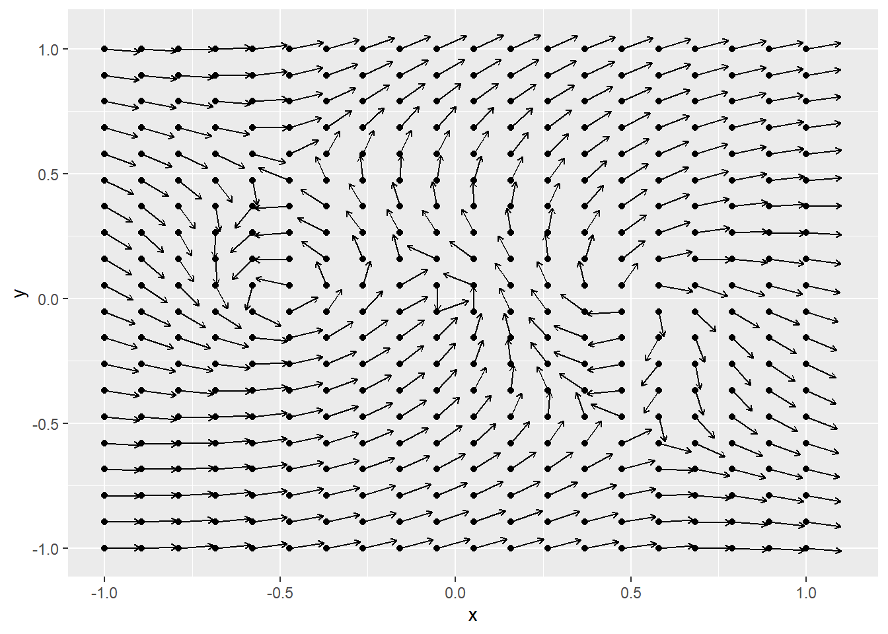
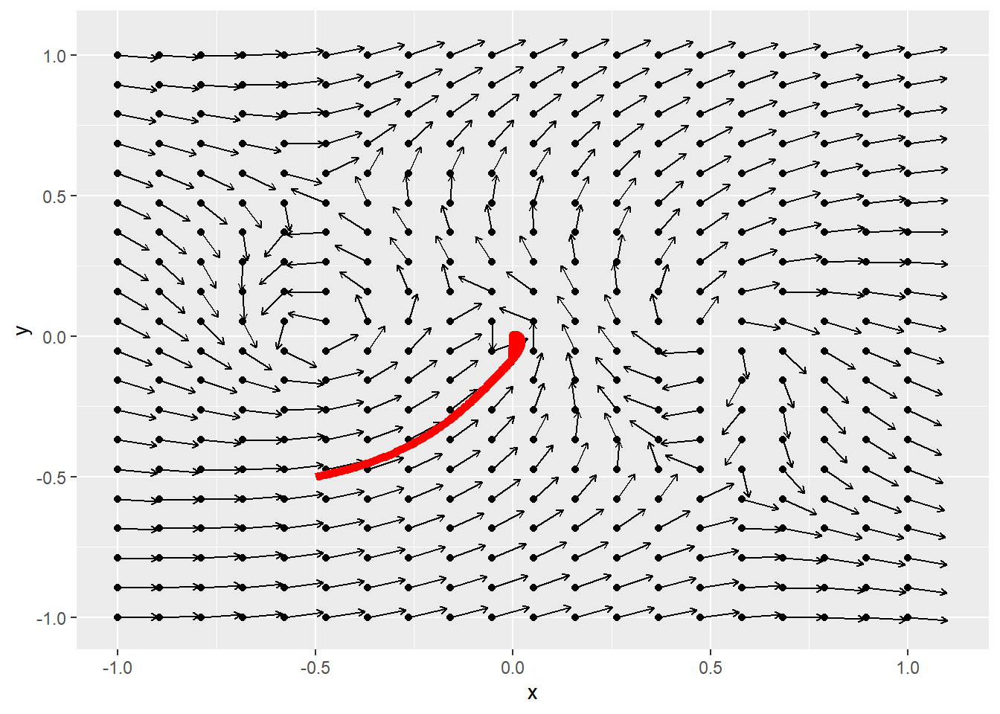
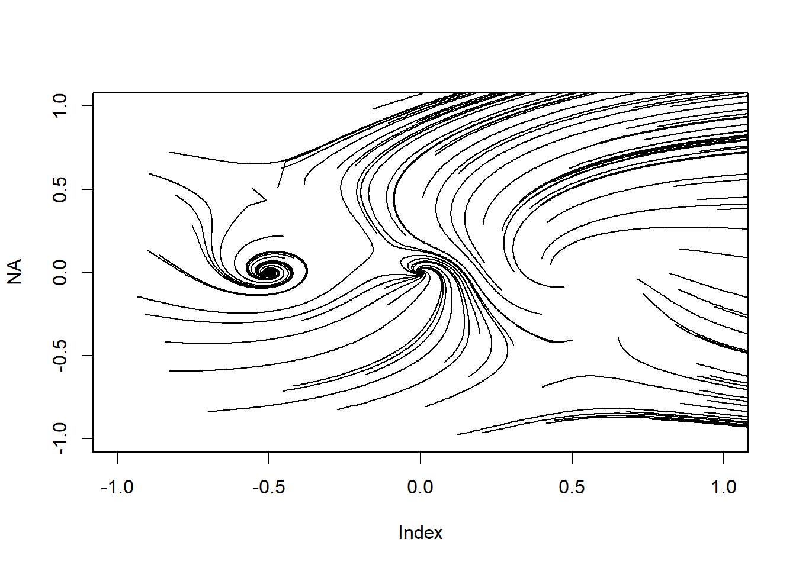

set.seed(2911)
library(ggplot2)
library(data.table)
N=20
dat <- expand.grid(x=seq(-1,1,l=20), y=seq(-1,1,l=20))
setDT(dat)
dat[ , z := x+1i*y ]
dat[ , v := complex(argument=Arg(z)+pi/2) ]
dat[ , z2 := z + .1*v ]
ggplot(dat) + aes(x,y) +
geom_point()+
geom_segment(aes(xend = Re(z2), yend = Im(z2)), arrow = arrow(length=unit(0.05,"inches")))Flow fields
art
R
Flow fields, or vector fields, are common tool for producing generative art.
In short, every point a canvas is associated with a direction, and an image is made from following the directions to make non-overlapping paths around the canvas. The most famous images based on flow fields right now are probably Tyler Hobbs’s Fidenzas, but there are a lot of different.
I didn’t use field flows as I wasn’t sure how I could add anything to what is already done, but lately I’ve had a couple of ideas that seem innovative, or at least produce outputs that don’t look like anything else I’ve seen.
In this post I’ll show how to get started with flow fields in R, and then illustrate how they are used in my latest project.
Visualising the vector field
As with the mystery curves we’ll use complex numbers, because this makes maths in the 2D plane easy, and R makes working with complex numbers very natural. Remember that direction is measured by the argument of a complex number.
The functions I’m going to use for my vector fields are rational functions, defined by the ratios of two polynomials.
I’ll illustrate this with a simple polynomial first, turning my last code chunk into a function to plot a particular vector flow, then passing it my function:
library(ggplot2)
library(data.table)
plotFlow <- function(FUN) {
N=20
dat <- expand.grid(x=seq(-1,1,l=20), y=seq(-1,1,l=20))
setDT(dat)
dat[ , z := x+1i*y ]
dat[ , v := complex(argument=Arg(FUN(z))) ]
dat[ , z2 := z + .1*v ]
ggplot(dat) + aes(x,y) +
geom_point()+
geom_segment(aes(xend = Re(z2), yend = Im(z2)), arrow = arrow(length=unit(0.05,"inches")))
}
plotFlow( \(z) (z-.5)*(z+.5)*z )
Now we can just call this plotting function with whatever flow function we like. For example, lets plot the vectors associated with
\[f(z)=\frac{z(z-0.5)(z+0.5)}{(z-0.5i+0.5)(z+0.5i-0.5)(z+0.1-0.1i)}\]
plotFlow( \(z) (z-.5)*(z+.5)*z / ((z-0.5i+0.5)* (z+0.5i-0.5)*(z+.1-.1i)) )
So far we’ve only plotted the vectors representing the direction of the flow at each point, rather than a path through the field itself. Lets fix that by plotting the path from the point starting at (say) (0.5,0.5).
We’ll make a vector to accommodate the points to be plotted, then let it flow around the canvas.
flowFunction = \(z) (z-.5)*(z+.5)*z / ((z-0.5i+0.5)* (z+0.5i-0.5)*(z+.1-.1i))
path <- -0.5 + -0.5i
for(i in 2:1000) path[i] = path[i-1] + 0.01 * flowFunction(path[i-1])We can plot this path on top of our graph of the flow vectors:
plotFlow(flowFunction) + geom_line(data=data.frame(path) , aes(x=Re(path), y=Im(path)), col="red", lwd=2)
Or just use base R to plot it on its own:
plot(path, type="l")
Next, to get a classic flow field image we can start a few different paths from different random positions. We’ll make a matrix to store all of the paths, with one row per path:
N=100
M=1000
path_points <- matrix(nrow=N, ncol=M)
path_points[,1] <- runif(N, -1,1) + 1i*runif(N,-1,1)
for(i in 2:M) path_points[,i] <- path_points[,i-1] + .01 * flowFunction(path_points[,i-1])Now we can plot these using ggplot()
reshape2::melt(path_points) |>
ggplot(aes(x=Re(value), y=Im(value))) + geom_path(aes(group=Var1)) +
coord_cartesian(xlim=c(-1,1), ylim=c(-1,1))
Or with base R:
plot(NA, xlim=c(-1,1), ylim=c(-1,1))
for(i in 1:N) lines(path_points[i,])
So we have a system for making field flow images. We define a function for our vector field, then pick starting points and interate to create the subsequent paths.
The artistic elements now all come from how we choose the function and start positions, and how we iterate and represent the paths we create.
If we massively increase the number of paths but reduce the number of iterations:
N=10000
M=100
path_points <- matrix(nrow=N, ncol=M)
path_points[,1] <- runif(N, -1,1) + 1i*runif(N,-1,1)
for(i in 2:M) path_points[,i] <- path_points[,i-1] + .01 * flowFunction(path_points[,i-1])
plot(NA, xlim=c(-1,1), ylim=c(-1,1))
for(i in 1:N) lines(path_points[i,])
This is a bit dense so we can reduce the intensity of the points.
plot(NA, xlim=c(-1,1), ylim=c(-1,1))
for(i in 1:N) points(path_points[i,], pch=".", col=hsv(0,0,0,0.1))
Before we go any further, lets have a look at the implications of choosing specific roots for the polynomials in our rational function. The numerator here has roots at \(0.5\), \(-0.5\) and \(0\). The denominator’s root are at \(-0.5+0.5i\), \(0.5-0.5i\), and \(-0.1+0.1i\). Lets add these points onto the graph to see how they interact with the flow:
plot(NA, xlim=c(-1,1), ylim=c(-1,1))
for(i in 1:N) points(path_points[i,], pch=".", col=hsv(0,0,0,0.1))
points(c(-0.5+0.5i, 0.5-0.5i,-0.1+0.1i), col="blue", cex=2,pch=4, lwd=4)
points(c(-0.5+0i, 0.5,0), col="red", cex=2,pch=1, lwd=4)
It seems at least in this case that the roots of the numerator (red dots) represent sinks or sources for the flow, that is points where flows are either attracted to or repelled from. The roots of the denominator (the poles of the rational function; blue crosses) are saddle points, flows are attracted to them on one axis but repelled in others, hence flows appear to ‘miss’ them altogether.
In fact, this property generally holds true, the zeros of our rational function will be sinks or sources, whereas the poles will be saddle points. We can prove this by noting that the argument of our rational function will be the sum of the arguments of the respective terms, and by thinking about how this sum changes as we move around a small area close to one of the poles or zeros.
In our image so far paths are starting from their randomly generated positions, and then flowing toward a sink or off the page. I think this looks messy, I would rather include the entire flow lines, and so I will add the flows both forwards and backwards from each start point. This way I generate the entire flow passing through each point, rather than just a random portion of it:
N=10000
M=100
path_points_forward <- matrix(nrow=N, ncol=M)
path_points_backward <- matrix(nrow=N, ncol=M)
path_points_forward[,1] <- runif(N, -1,1) + 1i*runif(N,-1,1)
for(i in 2:M) path_points_forward[,i] <- path_points_forward[,i-1] + .01 * flowFunction(path_points_forward[,i-1])
path_points_backward[,1] <- path_points_forward[,1]
for(i in 2:M) path_points_backward[,i] <- path_points_backward[,i-1] - .01 * flowFunction(path_points_backward[,i-1])
plot(NA, xlim=c(-1,1), ylim=c(-1,1))
for(i in 1:N) points(path_points_forward[i,], pch=".", col=hsv(0,0,0,0.1))
for(i in 1:N) points(path_points_backward[i,], pch=".", col=hsv(0,0,0,0.1))
We can make a couple of easy improvements. First by squaring the aspect ratio of the plot, second by altering the spacing between the points. At the moment it is fixed, leading to some unintended patterns in the plot points, but we can easily set it to be random:
N=10000
M=100
path_points_forward <- matrix(nrow=N, ncol=M)
path_points_backward <- matrix(nrow=N, ncol=M)
path_points_forward[,1] <- runif(N, -1,1) + 1i*runif(N,-1,1)
for(i in 2:M) path_points_forward[,i] <- path_points_forward[,i-1] + runif(N,0,.02) * flowFunction(path_points_forward[,i-1])
path_points_backward[,1] <- path_points_forward[,1]
for(i in 2:M) path_points_backward[,i] <- path_points_backward[,i-1] - runif(N,0,0.02) *
flowFunction(path_points_backward[,i-1])
par(mar=c(1,1,1,1))
plot(NA, xlim=c(-1,1), ylim=c(-1,1), asp=0,axes=F)
for(i in 1:N) points(path_points_forward[i,], pch=".", col=hsv(0,0,0,0.1))
for(i in 1:N) points(path_points_backward[i,], pch=".", col=hsv(0,0,0,0.1))
This image isn’t particularly appealing, but now that we have this system we can make a lot of beautiful images just choosing (a) the locations of the poles and zeros of our flow function and (b) choosing the starting points of the flows.
First, lets add some more poles and zeros to our flow function. Our original function had three poles and three zeros. Here I’m going to add 20 poles and 20 zeros, choosing the location of each randomly within the canvas.
poles <- runif(20,-1,1) + 1i*runif(20,-1,1)
zeros <- runif(20,-1,1) + 1i*runif(20,-1,1)
flowFunction <- function(z) {
fz = z-zeros[1]
for(i in zeros[-1]) fz = fz * (z-i)
for(i in poles) fz = fz / (z-i)
fz/Mod(fz)
}N=5000
M=200
path_points_forward <- matrix(nrow=N, ncol=M)
path_points_backward <- matrix(nrow=N, ncol=M)
path_points_forward[,1] <- runif(N,-1,1) + 1i*runif(N,-1,1)
for(i in 2:M) path_points_forward[,i] <- path_points_forward[,i-1] + runif(N,0,0.01) *
flowFunction(path_points_forward[,i-1])
path_points_backward[,1] <- path_points_forward[,1]
for(i in 2:M) path_points_backward[,i] <- path_points_backward[,i-1] - runif(N,0,0.01) *
flowFunction(path_points_backward[,i-1])
par(mar=c(1,1,1,1))
plot(NA, xlim=c(-1,1), ylim=c(-1,1), asp=0,axes=F)
for(i in 1:M) points(path_points_forward[,i], pch=".", col=hsv(0,0,0,0.1))
for(i in 1:M) points(path_points_backward[,i], pch=".", col=hsv(0,0,0,0.1))
Next lets alter the starting positions of the flows. In the image above they are randomly selected throughout the canvas, but I could instead start them in a ring around the canvas centre:
N=5000
M=200
path_points_forward <- matrix(nrow=N, ncol=M)
path_points_backward <- matrix(nrow=N, ncol=M)
path_points_forward[,1] <- 0.4*exp(2i * pi * seq(0,1,l=N))
for(i in 2:M) path_points_forward[,i] <- path_points_forward[,i-1] + runif(N,0,0.01) *
flowFunction(path_points_forward[,i-1])
path_points_backward[,1] <- path_points_forward[,1]
for(i in 2:M) path_points_backward[,i] <- path_points_backward[,i-1] - runif(N,0,0.01) *
flowFunction(path_points_backward[,i-1])
par(mar=c(1,1,1,1))
plot(NA, xlim=c(-1,1), ylim=c(-1,1), asp=0,axes=F)
for(i in 2:M) points(path_points_forward[,i], pch=".", col=hsv(0,0,0,0.1))
for(i in 2:M) points(path_points_backward[,i], pch=".", col=hsv(0,0,0,0.1))
Or we could start them along a line going through the origin:
N=5000
M=200
path_points_forward <- matrix(nrow=N, ncol=M)
path_points_backward <- matrix(nrow=N, ncol=M)
path_points_forward[,1] <- runif(N,-1,1)*(1 + 1i*runif(1,-.5,.5))
for(i in 2:M) path_points_forward[,i] <- path_points_forward[,i-1] + runif(N,0,0.01) *
flowFunction(path_points_forward[,i-1])
path_points_backward[,1] <- path_points_forward[,1]
for(i in 2:M) path_points_backward[,i] <- path_points_backward[,i-1] - runif(N,0,0.01) *
flowFunction(path_points_backward[,i-1])
par(mar=c(1,1,1,1))
plot(NA, xlim=c(-1,1), ylim=c(-1,1), asp=0,axes=F)
for(i in 2:M) points(path_points_forward[,i], pch=".", col=hsv(0,0,0,0.1))
for(i in 2:M) points(path_points_backward[,i], pch=".", col=hsv(0,0,0,0.1))